Fixing Backstage Catalog UI Gaps
Early 2025, we shipped a brand new experience for the Harness IDP catalog page, the most visited page by our customers. This involved a revamp of the table, filters, tabs and groupings, and making the columns in the table flexible to be used.
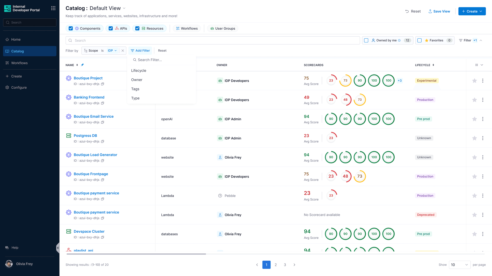
00
Problem summary
The catalog homepage is arguably one of the most viewed pages by IDP users. It lists every catalog entity, and shows just the things a user owns when they land here. Yet it looked exactly like it did four years ago when Backstage was open-sourced.
Our enterprise users need more than a static table. They need to configure the columns based on their needs.
The table needed to be unopinionated.
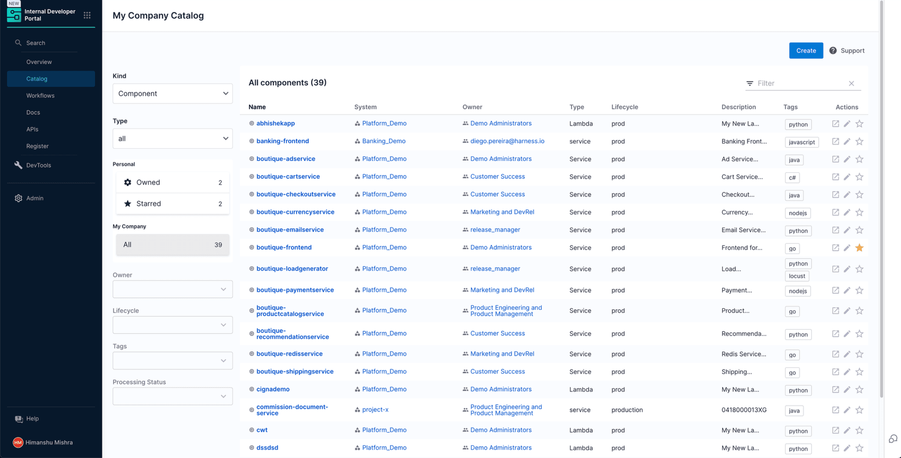
01
The challenge
Unintuitive filtering
The catalog hosts many kinds of entities, and a lot of them: software entities like Component and API, hardware entities like Resource, two hierarchical kinds, Systems and Domains, to organise the rest, plus Users, Groups and Locations for debugging.
Users come to this page with one of four critical use-cases:
- Look at the things I own
- Look at the things that exist in my company
- Debug Locations and ingestion issues
- Explore teams and the users in them
Filters had been added gradually without grouping, which made it hard to understand what to filter by. Customers often had to switch between different Kinds just to see what they wanted.
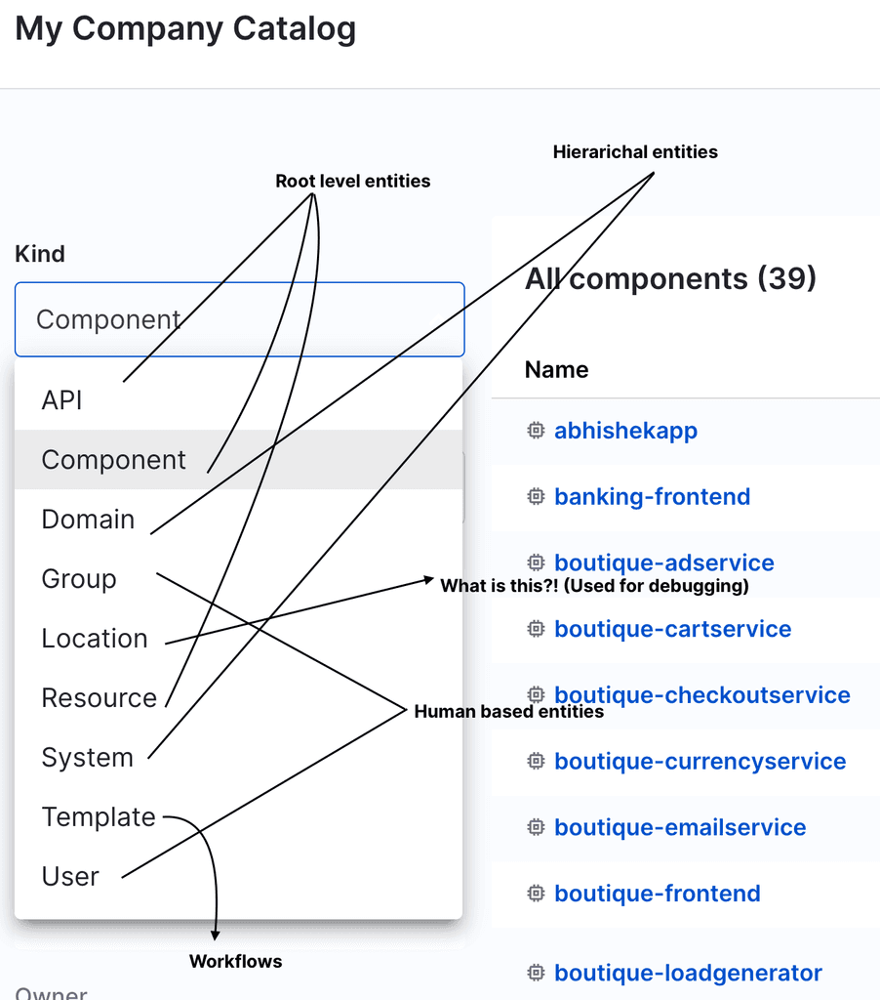
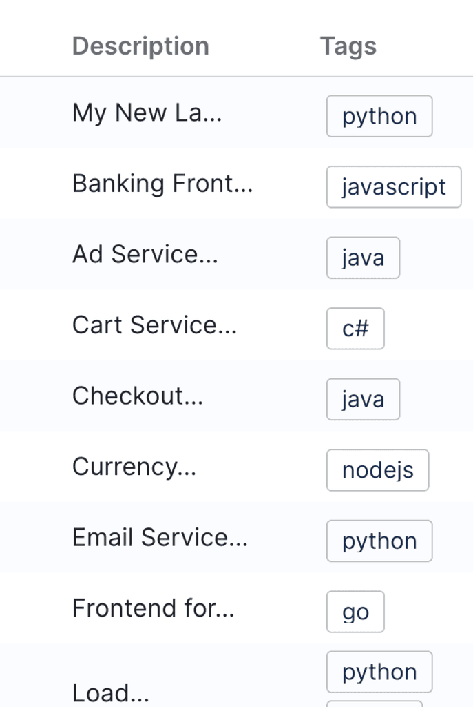
Lack of horizontal space
None of the descriptions were readable, because the sidebar and the filter section ate the horizontal space.
Hard-coded columns
Catalog entities carry a large number of data points. With hard-coded columns, the table missed critical information like Scorecard scores, which all of our competitors show, while carrying columns users didn't care about. Jira's issue list has the same problem, solved with user-configurable columns.
02
Design goals
We planned an end-to-end visual and usability refresh to address dated UI paradigms and make the catalog modern and delightful.
Flexible
Users should seamlessly configure the width and position of table columns.
Simple
Clean out the clutter, and help users easily complete their tasks.
03
The solution
A more intuitive way to take actions on table columns
We wanted to help users change the column arrangement and take actions like sorting, hiding and pinning more easily. Now users simply hover a column name and a dropdown shows the actions available for that column.
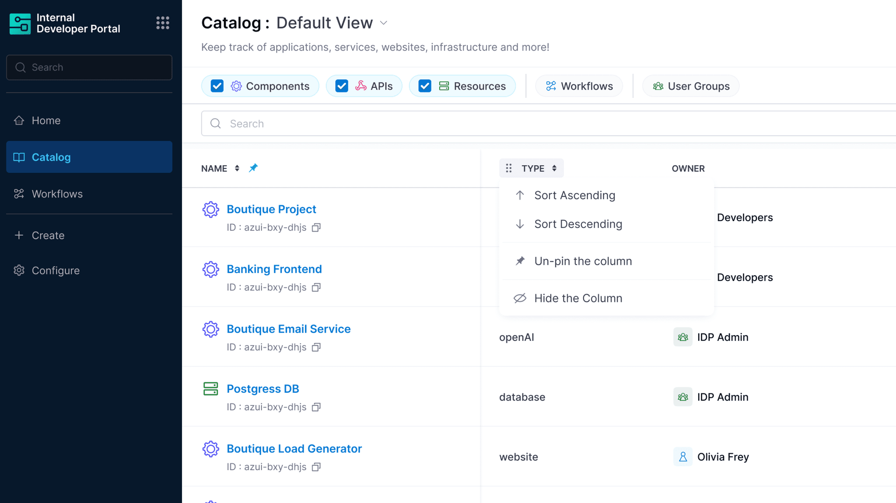
Reducing the cluttered search bar and filters
Our first iteration was functional, but not visually good or optimised.
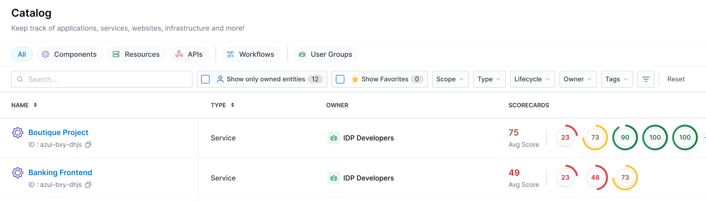
Subsequent iterations
After going through the filter designs of GitHub, Linear, Vercel, Google Cloud Console and others, we arrived at the design that proved to be the users' choice. It may look like more clicks, but each click has a purpose, and users found it more intuitive.
Per Miller's Law, the average person holds about seven, plus or minus two, pieces of information in short-term working memory. Reducing the clutter in the search bar lowers the cognitive load and helps users make concise decisions while applying a filter.
Iteration 2
Let users choose which filters they want to add and see in the current view.
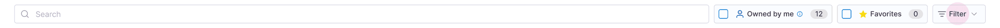
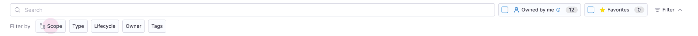
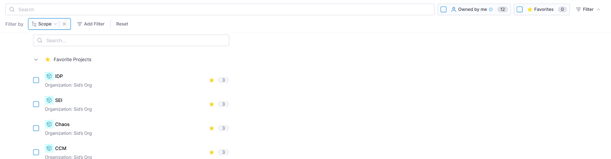
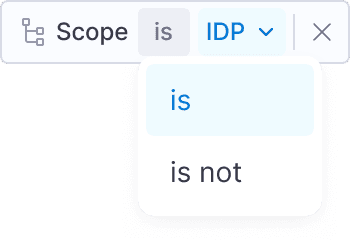
Letting users control the conditions
In a number of use cases users wanted to ignore a few filter values and see the resulting data. So we introduced conditional selection in the filters as well.
Save filters as a view
Saving filters wasn't enough. Users also wanted to save the arrangement of columns, so we introduced saving the whole view, which can be shared across a team.
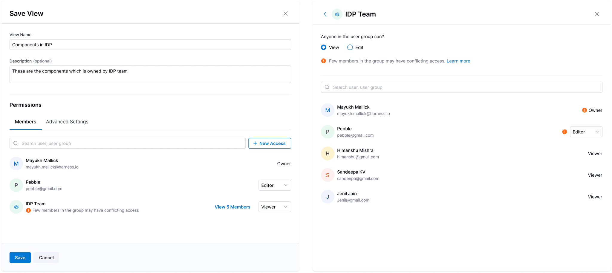
04
Results
Users visit the page more often, and the main reason is the customisation. Engineering leaders started creating persona-based views for their teams, which helps each user see what matters most to them.
Previously all of this needed a dedicated support engineer building custom pages in code. With the flexible table, users have become self-sufficient at configuring it themselves, and that engineering time is saved.
“Mayukh led the delivery of large-scale initiatives such as IDP 2.0, IDP Catalog, and the SSEM NAB prototype — which directly contributed to securing the $****** million deal.”
Keying Bi, Director of Design, Harness